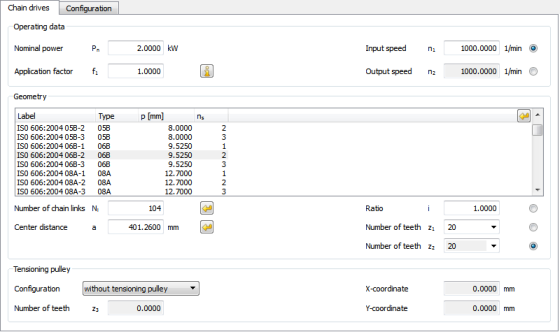

|
|
|


链传动
使用此模块可计算符合 DIN ISO 606 的滚子链传动（标准化滚子链值取自数据库）。对于单排链和多排链，通过多边形效应等计算链条几何（中心距、链节数）、可传递功率、径向力和速度变化。依据：DIN ISO 10823、[26] 和 [8]。
在计算过程中，程序会检查最高允许转速，并给出所需润滑的建议值。
作为变体，也可以使用第三个带轮（张紧轮）进行计算。张紧轮的 X 和 Y 坐标可在链传动选项卡中定义。如果打开配置选项卡，可以使用鼠标移动张紧轮。此时，相应的 x 和 y 值会显示在状态行中。该带轮可根据需要定位在外部或内部。

图 53.1：基本数据：链传动计算
Chain Drives
Use this module to calculate chain drives with roller chains as defined in DIN ISO 606 (with standardized roller chain values taken from a database). The chain geometry (center distance, number of chain elements) for simple and multiple chains and the transmittable power, radial forces, and variation in speed, are calculated by the polygon effect, etc. Basis: DIN ISO 10823, [26] and [8].
During this calculation, the program checks the highest permitted speed and shows a suggested value for the required lubrication.
As a variant, the calculation can also be performed with a third pulley (tensioning pulley). The X and Y coordinates of the tensioning pulley can be defined in the Chain drives tab. If you open the Configuration tab, you can use the mouse to move the tensioning pulley. In this case, the particular x and y value is displayed in the status row. This pulley can be positioned outside or inside as required.
Figure 53.1: Basic data: Chain calculation